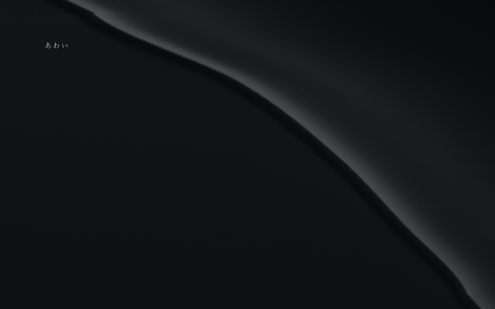
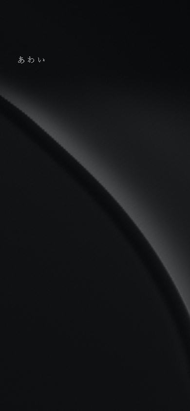
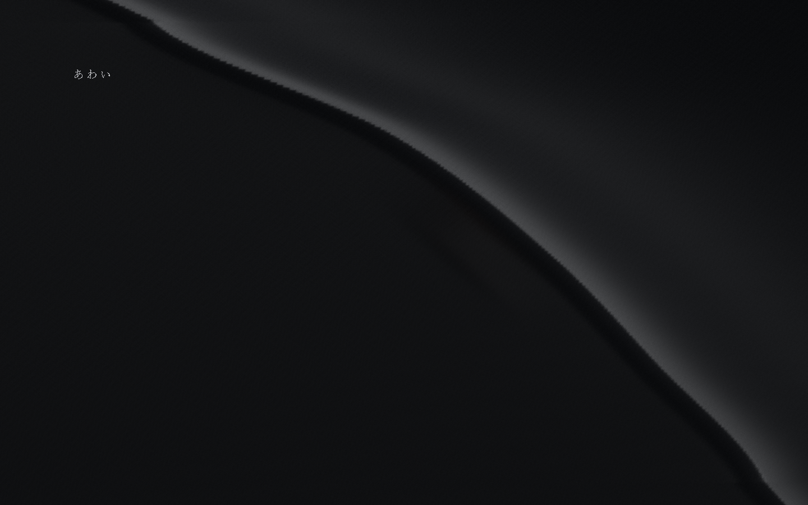
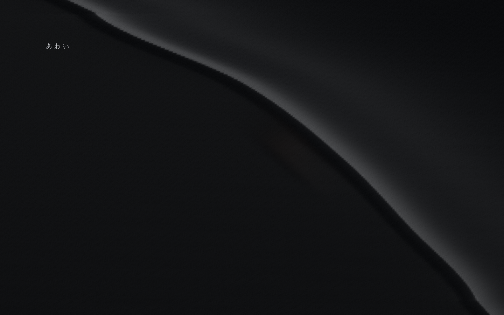

AWAI / G2-A / 2026-10-09
黒い膜 — A・B比較
S0のみの独立試作。Aは不透明な膜の遅れた琥珀反射、Bは同じ面の厚みで減衰する背後の微光。形状・荷重・復元・材質の基準を共有します。
静止状態 / PC・スマホ




同一荷重のA・B




動作プレビューで「同じ荷重を再生」を使うと、毎回荷重ゼロから同じ位置を2.4秒押します。上部のA/Bボタンで切り替えられます。
操作中の録画
自動ブラウザの操作録画。実装のA押下→復元→B押下→復元。物理端末の録画ではありません。
G1との比較
動作プレビュー下部の「重ねる量」で実装0%／重ね50%／G1 100%を比較できます。以下は同じ画面座標での証拠です。G1は生成仮素材の美術見本です。
方式と調整
手作業の稜線制御点と高さ場で面を作り、面UVに荷重を置きます。法線を変形形状から更新し、手続き的な繊維・粗さと左上の共通光で照らします。G1画像は比較・静止代替だけに使用。
調整：沈みの深さ、影響範囲、稜線方向と横断方向の比率、応答速度、復元速度、琥珀光、Bの透過量。初期値は沈み1.1%（基準短辺）、方向比2.8、透過係数0.12。
Bの透過は薄くなった膜を通る光の近似で、出力alphaは1のまま。稜線の厚み・繊維むら・荷重で透過光を減衰させます。円形穴、背景画像の露出、スポットライトは使っていません。
検証結果
検証記録を読み込んでいます。
| 確認 | 結果 |
|---|
WindowsのEdge/CDPおよび自動WebKit。スマホ入力は端末を模したブラウザ検証です。frame間隔／CPU送信時間を実機FPSやGPU描画時間とは扱いません。詳細JSON →
未確認・表現上の課題
物理iPhone／Androidの低輝度・屋外、実機Safariのバー伸縮、低性能GPU、長時間の発熱・電池・GPUメモリは未確認。低輝度チェックはbrightness(.55)の模擬です。
写真と同一の表面ではなく、繊維の均質さ・細部の稜線・左面の起伏は簡略化。高い沈み／狭い範囲では法線変化とメッシュの細かな段差が目立つ場合があります。A/B差は弱く、低輝度や指で隠れた位置では判別しにくい可能性があります。
静止時はRAF停止。PC DPR1.5／SP1.25を上限とし、描画buffer長辺は2400／1400pxまで。面は49,601頂点・98,304三角形。低性能端末の30fps達成は未検証です。
G2-Aの評価待ち。KASANE・AIMA・本編統合へは進んでいません。既存公開サイトは変更せず、新規プレビュー専用フォルダで提出します。